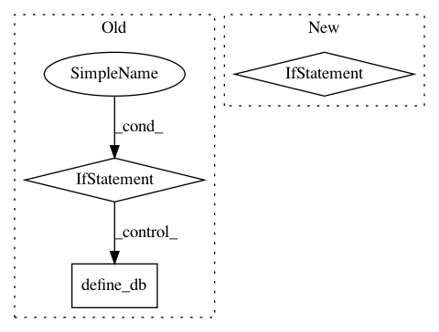

e2d9e370df886382d0815f2e68925f8dc49986b0,pudl/extract/ferc1.py,,extract,#Any#Any#Any#,547
Before Change
// this is here because if ferc wasn"t ingested in the same session, there
// will not be a defined metadata object to use to find and grab the tables
// from the ferc1 mirror db
if len(ferc1_meta.tables) == 0:
define_db(max(pc.working_years["ferc1"]),
pc.ferc1_default_tables,
ferc1_meta,
basedir=SETTINGS["ferc1_data_dir"])
for table in ferc1_extract_functions:
if ferc1_tables:
if table in ferc1_tables:
logger.info(
After Change
f"{" ".join(pc.working_years["ferc1"])}."
)
for table in ferc1_tables:
if table not in pc.ferc1_pudl_tables:
raise ValueError(
f"FERC Form 1 table {table} was requested but it has not yet "
f"been integreated into PUDL. Heck, it might not even exist! "
f"If you"d like to contribute the necessary cleaning "
f"functions, come find us on GitHub: "
f"{pudl.__downloadurl__}"
f"For now, the tables which PUDL has integrated are: "
f"{" ".join(pc.ferc1_pudl_tables)}"
)
// Connect to the local SQLite DB and read its structure.
ferc1_engine = connect_db(testing=testing)
ferc1_meta = sa.MetaData(bind=ferc1_engine)
ferc1_meta.reflect()
if not ferc1_meta.tables:
In pattern: SUPERPATTERN
Frequency: 3
Non-data size: 3
Instances
Project Name: catalyst-cooperative/pudl
Commit Name: e2d9e370df886382d0815f2e68925f8dc49986b0
Time: 2019-05-30
Author: zane.selvans@catalyst.coop
File Name: pudl/extract/ferc1.py
Class Name:
Method Name: extract
Project Name: catalyst-cooperative/pudl
Commit Name: e2d9e370df886382d0815f2e68925f8dc49986b0
Time: 2019-05-30
Author: zane.selvans@catalyst.coop
File Name: test/conftest.py
Class Name:
Method Name: ferc1_engine_travis_ci
Project Name: catalyst-cooperative/pudl
Commit Name: e2d9e370df886382d0815f2e68925f8dc49986b0
Time: 2019-05-30
Author: zane.selvans@catalyst.coop
File Name: test/conftest.py
Class Name:
Method Name: ferc1_engine